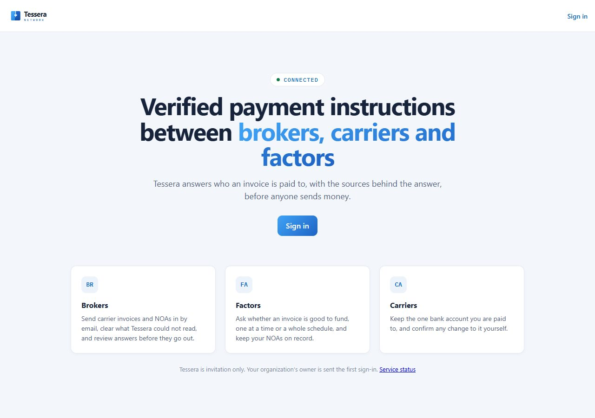
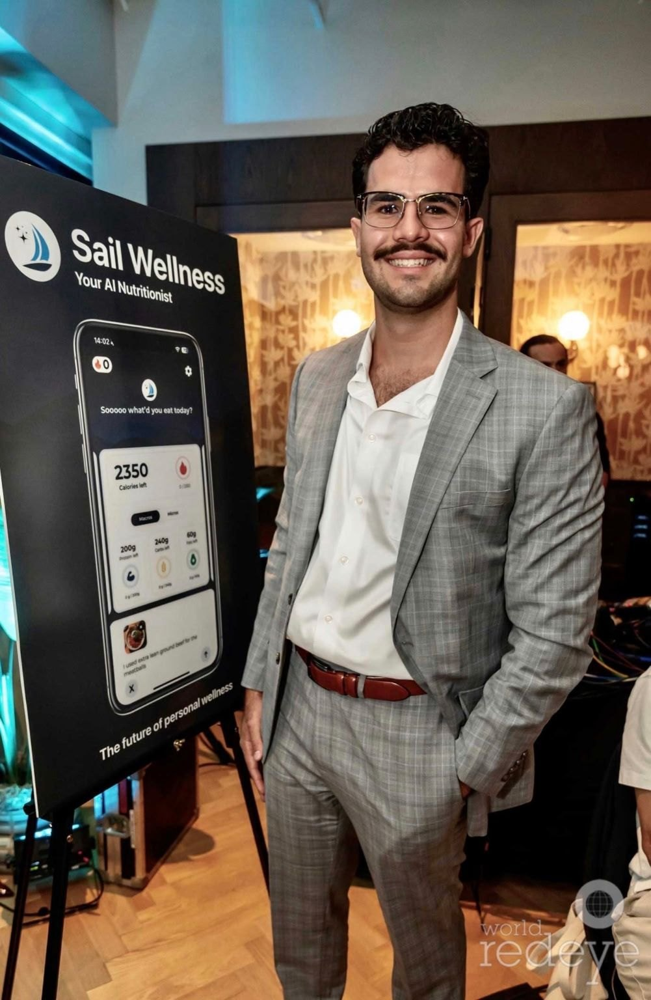
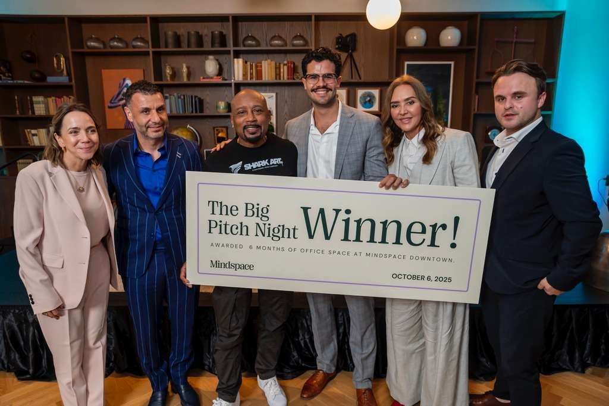

Live now
Running today, on a link you can open
Tessera: verified payment instructions for freight live
Freight brokers, carriers and factors lose real money when someone quietly changes who an invoice is paid to. Tessera answers that question, with the sources behind the answer, before anyone sends money.
Bank-account changes are confirmed by two test deposits and an email to the owner on file, with a one-click fraud report. Notices of assignment can never be silently edited. Carrier documents come in by email and are read by document AI.

tessera-mvp.onrender.com · by invitation
Founder, product designer and engineer · .NET, PostgreSQL
Tourney Now: golf tournaments, from sign-up to scorecard private beta
A marketplace to find and enter golf tournaments, and an event-day platform for the organisers who run them: registration, teams, and live scoring.
Behind a password while it's in beta. Happy to walk you through it.
Product designer and engineer
Sail Wellness: product risk assessment live
An API that ranks how clean a product is, built by unifying scattered toxicology data with AI: microplastics, PFAS, processing. It infers product-level risk where direct data doesn't exist.
Founder, architect
FactorFox document ingestion in production
Built for FactorFox, a factoring-software company. Their customers' financial documents, in any structure, are read straight into the platform as clean, machine-readable data.
It cut customer onboarding from months to days.
Architect and dev lead
In build
Being built now. Not live, and not claimed as live
VFE: Vasquez Factoring Exchange building
A factoring company that runs as software. The whole platform automated into one exchange, with the middleman removed and every decision verified at its source.
FactorFox Capital in progress
A way to rate trade receivables, and the software that makes it possible. A software-native lender built on the FactorFox and FactorEvo network.
How I build
One system, and every piece it builds is recorded
Weeks, not months
Tessera went from its first document to a live link in 56.4 hours. At a common agency pace, 30 story points a sprint, the same 262 points take about 17 weeks.
From my own build records · the points are my mapping, not an audit
Watch it being built
Each finished flow is stamped with the time. This is Tessera's real log, one line per flow (Eastern time).
The builder can't grade itself
Every flow is tested in a real browser against a real database, and the rules live in the database itself, not only on the screen. Nothing ships until every test passes.
Design and code in one loop
I design and build together, so every screen that's approved is already a working screen. Design is cheap to change after you've seen the real flows.
What I can't claim yet
Real limits, written down before you ask
My products, not client contracts
Tessera, Tourney and VFE are my own products. I'm only now starting to build for outside clients, so there are no client reviews on this page yet.
The calorie app didn't survive
My first product, a photo calorie counter, ran for about 18 months. It won a pitch night, and I stopped work on it after that. It's retired, and I list it because it's where I learned to ship.
Self-taught, not a CS degree
My degree is in finance and information systems. The engineering I learned by building, and by managing the developers who taught me what good looks like.
My numbers, my records
The hours and counts on this page come from my own build records. Nobody has audited them. Ask me for the record behind any of them.
The record
Where I've been, briefly
| Big Pitch Night winnerjudged by Daymond John · prize: six months of office space | Oct 2025 |
| Sail Wellness, foundercalorie counter, browser extension, product risk API | 2024 – |
| Hired and managed 15+ developersand interviewed many more | 2024 – |
| Web design, 5 live sitesSail, FactorFox, FactorEvo, a yoga studio, and this one | 2023 – |
| Florida International UniversityB.S. Finance & Information Systems · GPA 3.56 · IB Diploma | B.S. |

